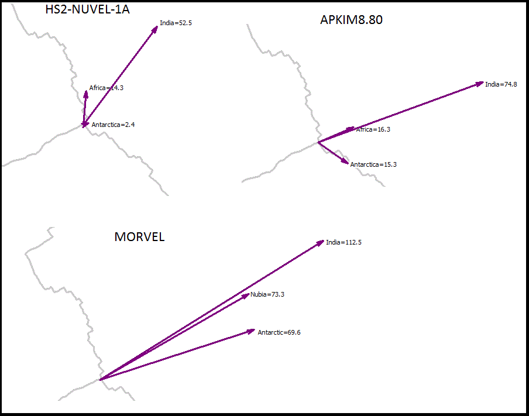

Motion of the three plates at the Indian Ocean triple junction, in three different plate models. Note that despite different assumptions and vastly different motion vectors for the individual plates, the resultant motions between the pairs of plates are very similar:
In the HS2-NUVEL-1A model, Antarctica (at least the point in the plate at the triple junction) basically does not move
The differences between the motions between plates shows the uncertainty in our knowledge about the plates, or places where what we consider a single large plate is actually a number of smaller plates, or where the plate suffers internal deformation.
Last revision 3/29/2016